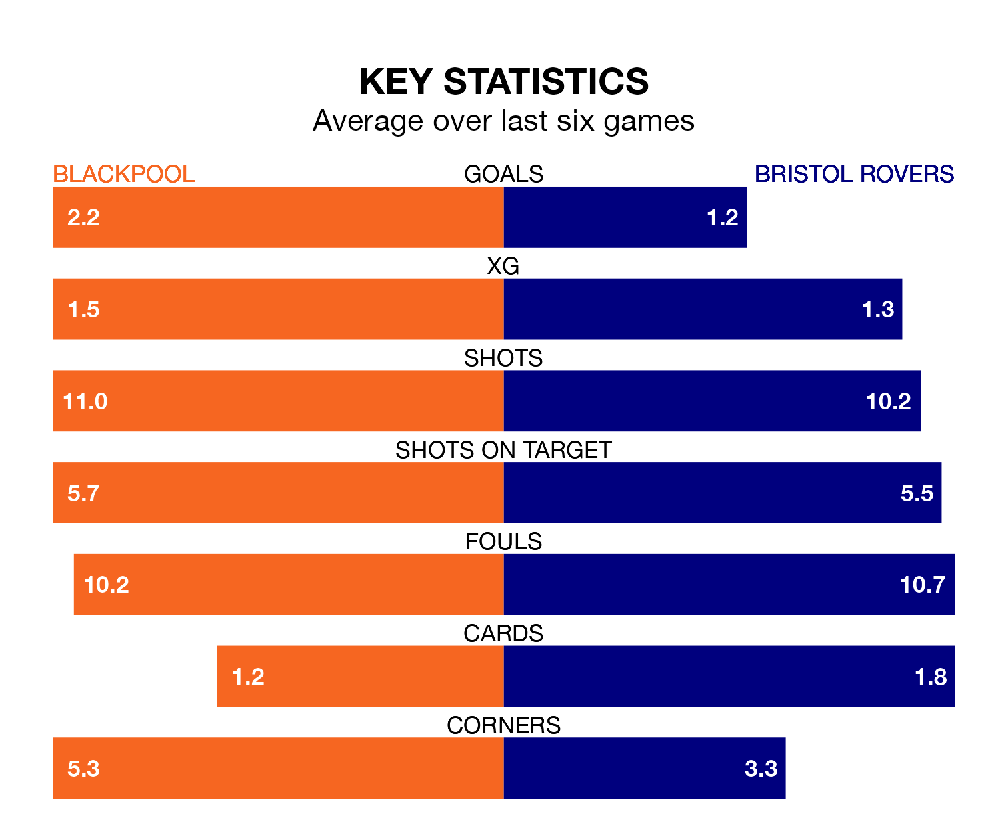

Blackpool are heavy favourites to keep all three points at home in Saturday's kick-off against Bristol Rovers.
The Seasiders, who sit eighth in EFL League One with 22 games played, are priced at 1.6 to seal victory at Bloomfield Road.
Sitting four places and five points behind them in the table, Rovers are 4.4 to win with *Betting Company*, while the draw is at 3.8.
With 37 goals in 22 games so far this season, Blackpool are scoring more than average in the league with 1.7 goals per game. And they are conceding fewer than average, letting in 27 goals at a rate of 1.2 per game.
Rovers are also above average scorers, with 1.4 goals per game, compared to a league average of 1.3. They have conceded 1.2 goals per game.
In Jordan Rhodes, the Seasiders have one of the league's sharpest shooters so far this season. He has notched 14 goals in 18 appearances, to sit second in the scoring charts.
His goal rate of one every 111 minutes is quicker than that of Chris Martin, the Gas's top scorer with a goal every 203 minutes, and a total of four goals in 12 games.
In the last five years, Blackpool and Rovers have played each other on five occasions. Blackpool won two of them and Rovers three.
On average, the Seasiders scored 1.0 goal and the Gas 1.6 in those matches.
Their last meeting was on May 9 2021, when Blackpool won 1-0 at home.
The hosts are in mixed form in EFL League One, with three wins and three losses from their last six games.
With two wins and three draws over that period, the away side's form is similar – they have both taken nine points from 18.
Blackpool's last match was on December 16, a 2-1 loss against Cambridge United, with Rhodes getting the goal for the Seasiders.
Rovers beat Bolton Wanderers 2-1 last time out, also on December 16, with Anthony Evans and John Marquis on the scoresheet.
